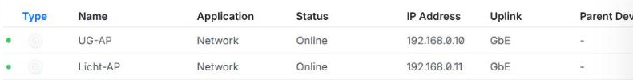
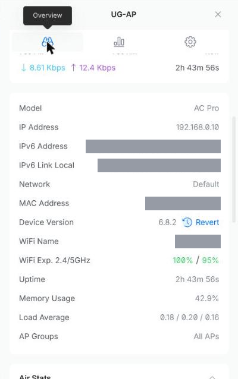
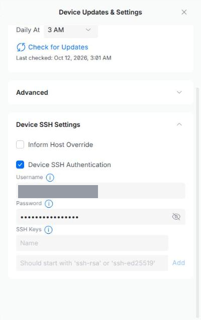
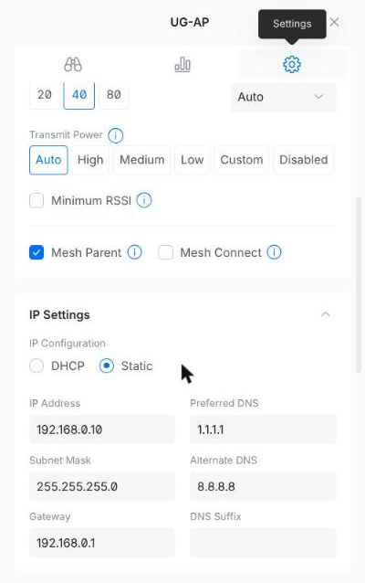

UniFi Access Points
This page holds everything about the WiFi devices themselves: everyday use, fixing faults, and resetting and setting up a device again. Installing the controller on the server is kept separately in UniFi Controller (Docker) and is not needed here.
Sections 1 to 7 need no prior knowledge. From section 8 on, a terminal is required.
1. The Essentials
- There are two WiFi transmitters (access points) in the house:
UG-APandLicht-AP. Both broadcast the same WiFi; devices switch to the nearest one on their own. - They are managed through a web page, the controller. It runs on the server in the house.
- WiFi also works while the server is off. Only the management page is unavailable then.
- Updates install themselves, every night at 3 AM.
2. The Light on the Access Point
| Light | Meaning | What to do |
|---|---|---|
| Blue, solid | Everything is fine | Nothing |
| White, flashing | Device is starting | Wait two minutes |
| White and blue alternating | Update in progress | Wait, do not unplug |
| Blue, with short gaps | No connection to the network | See section 5 |
| White, solid | Device is not set up | Set it up, see section 9 |
| Off | No power | See section 5 |
3. Opening the Controller
- Connect to the network in the house and open
https://192.168.0.50:8443in the browser. - The browser warns about an insecure connection. That is normal here: click Advanced and then Proceed to 192.168.0.50.
- Sign in with the management account.
- A window titled Upgrade to UniFi OS Server can be closed with the cross at the top right.
4. Checking That Everything Runs
Click UniFi Devices on the left (the round icon). The list shows both access points with their state.

- Online with a green dot: the device works.
- Offline in grey text: the device cannot be reached.
Clicking a device opens its details on the right. The Overview tab shows model, IP address, MAC address and version.

5. When Something Does Not Work
Go through the steps in order and check after each one whether the problem is solved.
WiFi is weak or gone in one place
- Look at the light of the nearest access point and compare it with the table in section 2.
- If the light is off: check that the small power supply (PoE
injector) is plugged into the socket and both cables on it are
seated firmly. The
POEsocket leads to the access point,LANto the router or switch. - Restart the device: pull the power supply out of the socket, wait ten seconds and plug it back in. After two to three minutes the light should be solid blue.
WiFi is gone in the whole house
- Check the router first: does the internet work on a device that is connected by cable?
- Restart both access points one after the other, as described above.
A device is "Offline" in the controller, but WiFi works
The device is working but cannot reach the controller.
- Check that the Inform Host Override is set (section 8).
- Tell the device the controller address again (section 9, step 3,
with the login from section 8 instead of
ubnt).
After a power cut
There is nothing to do. All devices start on their own and keep their settings.
If none of this helps
If a device stays off, offline or solid white after a restart and ten minutes of waiting, reset it and set it up again (section 9).
6. Restart and Light via the Controller
Click a device in the device list, switch to the Settings tab (gear) and scroll to the Manage section.
| Function | Effect |
|---|---|
| Restart | Restarts the device without anyone having to go there. |
| Locate | Makes the light flash to help find the device. |
| LED | Switches the light on or off permanently. |
| Remove | Removes the device from the controller and resets it. It then has to be set up again. |
| Disable | Switches off the WiFi of this device. |
7. Updates
Updates for the access points install automatically. The device restarts in the process, and WiFi drops out in that place for a few minutes. That is why it happens at 3 AM.
The schedule and the current state are shown under UniFi Devices -> Device Updates & Settings (bottom left).
8. Basic Controller Settings
Open UniFi Devices and click Device Updates & Settings at the bottom left. The Device SSH Settings section holds two settings that apply to all devices.

- Inform Host Override: has to be enabled and contain
192.168.0.50. The controller runs in a container and would otherwise give the devices an address they cannot reach. - Device SSH Authentication: username and password for logging in to set-up devices over SSH. The eye next to the password shows it in plain text.
9. Resetting and Setting Up an Access Point
This procedure applies to a new device just as to one that no longer responds. The device loses all its settings and gets them back from the controller in step 4.
-
Reset. Hold the reset button next to the network socket with a paper clip for about 10 seconds while the device has power. It restarts; afterwards the light is solid white.
-
Check the connection. The device has to be connected by network cable. On the PoE injector:
POEto the access point (portMain),LANto the router or switch. -
Set the controller address. The device does not find the controller on its own. Its IP address is in the router's device list; username and password are both
ubntafter a reset.The general format is
set-inform http://<controller-ip>:8080/inform.8080is the default port of a UniFi controller; here it is8081, because8080is already taken on the server.If SSH aborts with
no matching host key type: -
Adopt. The device shows up under UniFi Devices. Click Adopt. If it was already in the list, it takes over its earlier settings. If it stays stuck in "Adopting", run the
set-informcommand a second time. -
Verify. The light is solid blue and the device is "Online" in the list. For a new device, continue with name, firmware update and the static IP address (section 10).
From adoption on, the SSH login from section 8 applies, no longer
ubnt. Together with the static IP address from section 10, the login
then is:
When to reset?
A restart (briefly cutting the power) erases nothing and is always the first attempt. Resetting is the second step, if the device still does not run afterwards.
10. Static IP Address
Open the device in the list, switch to the Settings tab (gear) and
scroll to IP Settings. Change from DHCP to Static.

| Field | Value |
|---|---|
| IP Address | 192.168.0.10 (UG-AP), 192.168.0.11 (Licht-AP) |
| Subnet Mask | 255.255.255.0 |
| Gateway | 192.168.0.1 |
| Preferred DNS | 1.1.1.1 |
| Alternate DNS | 8.8.8.8 |
The addresses have to be outside the router's DHCP range, otherwise the router may hand them out a second time.
11. WiFi and Mesh
Create or change the WiFi under Settings -> WiFi: name and password. The network is broadcast on all access points automatically.
Mesh (not in use)
Both access points are on a cable; a wireless uplink (mesh) is not used. Should a device without a network cable be added later:
-
The switches are set per device in the same tab as the IP settings, right above IP Settings:
- Mesh Parent on the wired access point.
- Mesh Connect on the access point without a network cable.
-
Set the device up on a cable first, then give it power only at its destination. After five to ten minutes it is "Online" again with a wireless uplink.
A wireless uplink through concrete ceilings is the most common cause of unstable access points. Wherever possible, run a cable.
12. Finding Things Again
| Looking for | Location |
|---|---|
| MAC address, IP, firmware version | Click the device, Overview tab |
| Change the static IP | Click the device, Settings tab -> IP Settings |
| SSH username and password | UniFi Devices -> Device Updates & Settings -> Device SSH Settings |
| Inform Host Override | same place |
Inform address for set-inform |
http://192.168.0.50:8081/inform |
| SSH login on a set-up device | ssh <new-username>@<static-ip> |
| Controller version | Dashboard, top left tile |